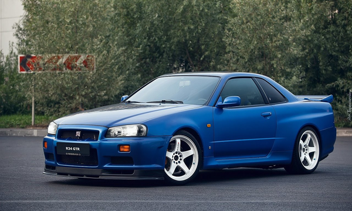
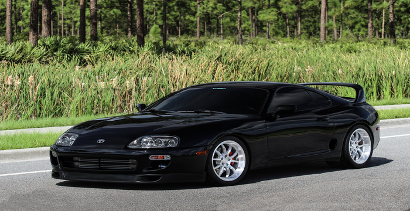
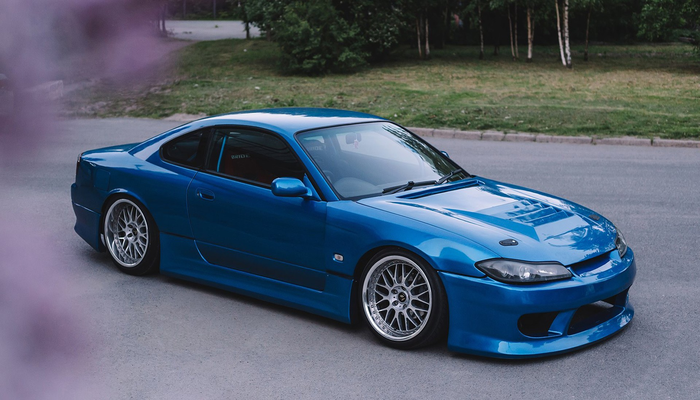

Легковые
Nissan Skyline R34 – это легендарный автомобиль, который известен многим по фильмам или играм. Его хотят многие для одной цели – гонять и чаще всего боком. Японский производитель выпустил эту машину в 1998-м году и при разработке он серьезно заморачивался над спортивностью и экологичностью.
Toyota Supra — серийный спортивный автомобиль, выпускающийся компанией Toyota с 1978 по настоящее время. Дизайн Supra был перенят от Toyota Celica, но кузов стал длиннее и шире[5]. Начиная с середины 1986 года, Supra отделилась от Celica, став самостоятельной моделью. В связи с этим Toyota перестала использовать префикс Celica, и автомобиль стал именоваться просто Supra[6]. Из-за сходства с названием Celica, их часто путают. Первое, второе и третье поколения Supra собирались на заводе в Тахаре, а четвёртое поколение — на заводе в городе Тоёта. Supra также имеет связь с Toyota 2000GT, от которой к ней перешел двигатель. На автомобили первых трёх поколений устанавливались двигатели M-серии от Toyota Crown и 2000GT. На все четыре поколения Supra устанавливались рядные шести-цилиндровые двигатели. Шасси получило код «А»
Nissan Silvia S15 - Внешний вид данного купе хорош даже по современным меркам, модель выглядит агрессивно и именно этим она и привлекает молодую аудиторию. Здесь применена оптика в японском стиле, она узкая и имеет линзы внутри. Капот тут рельефный, а бампер получил воздухозаборники и небольшую радиаторную решетку. Боковая часть выглядит чуть проще, колесные арки раздуты не сильно. Присутствует небольшое количество аэродинамических элементов в верхней части кузова. Задняя часть выглядит не менее привлекательно, здесь находится узкая галогенная оптика. На бампере присутствуют небольшие линии, а под ним находятся патрубки системы выпуска. Также автомобиль имеет спойлер, на котором продублирован треугольный повторитель стоп-сигнала.